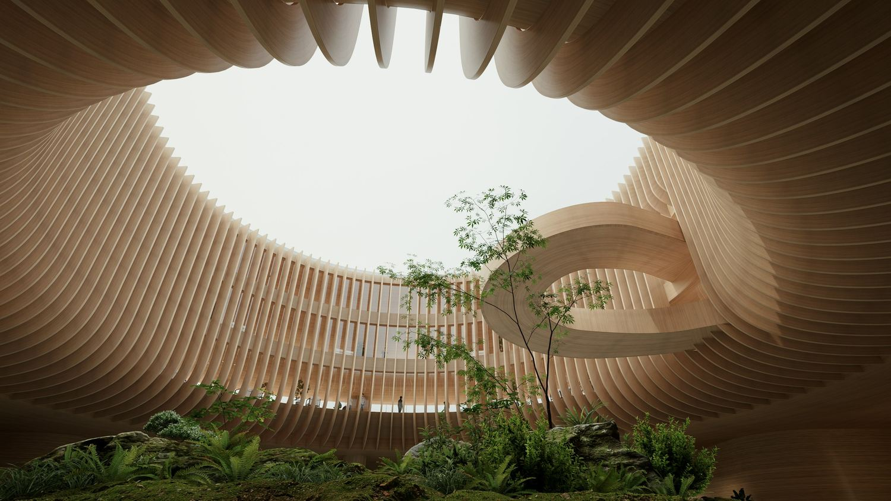
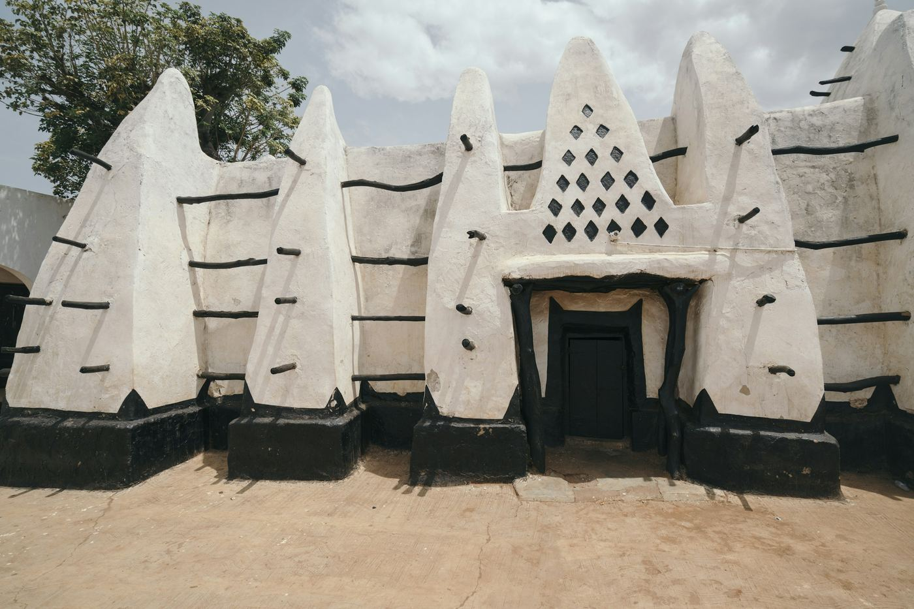
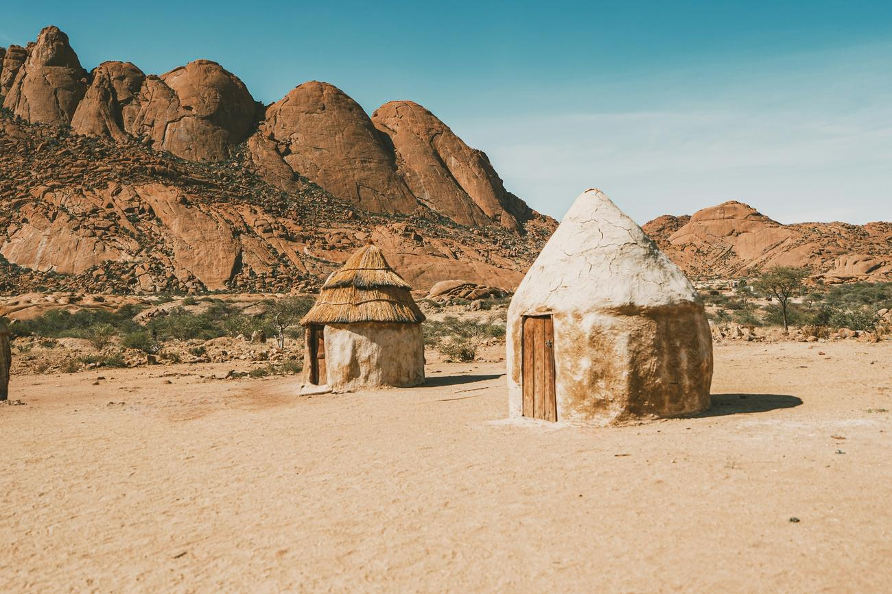
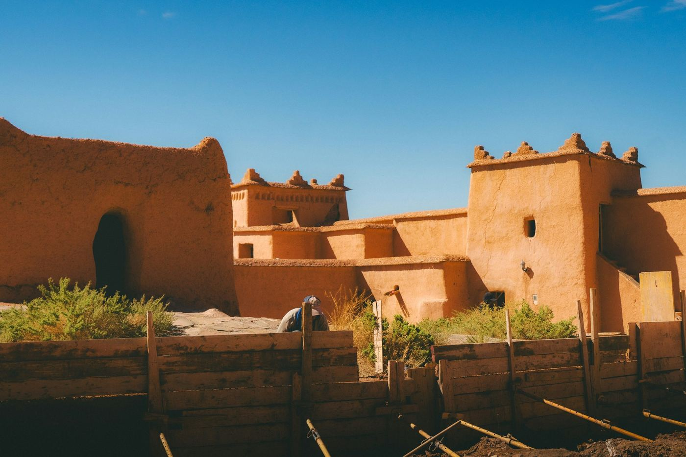
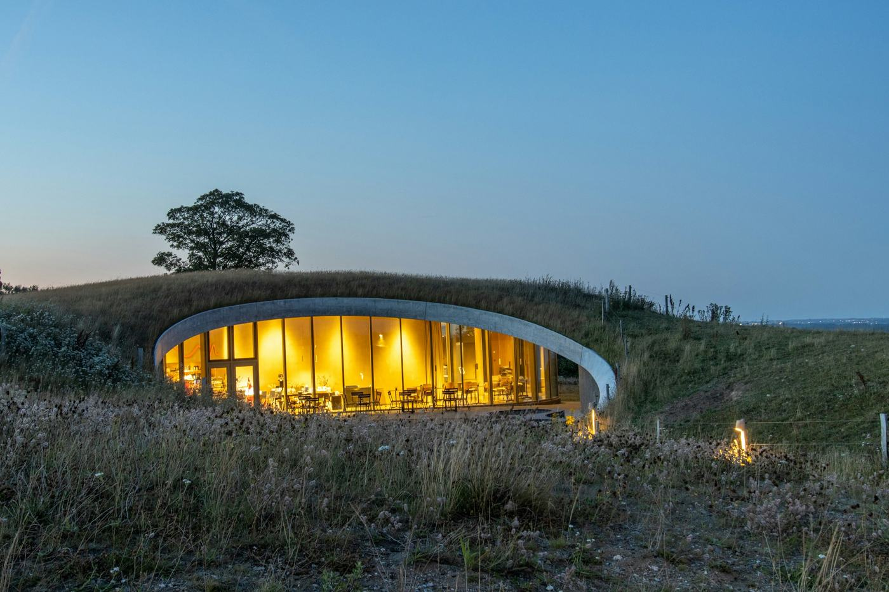
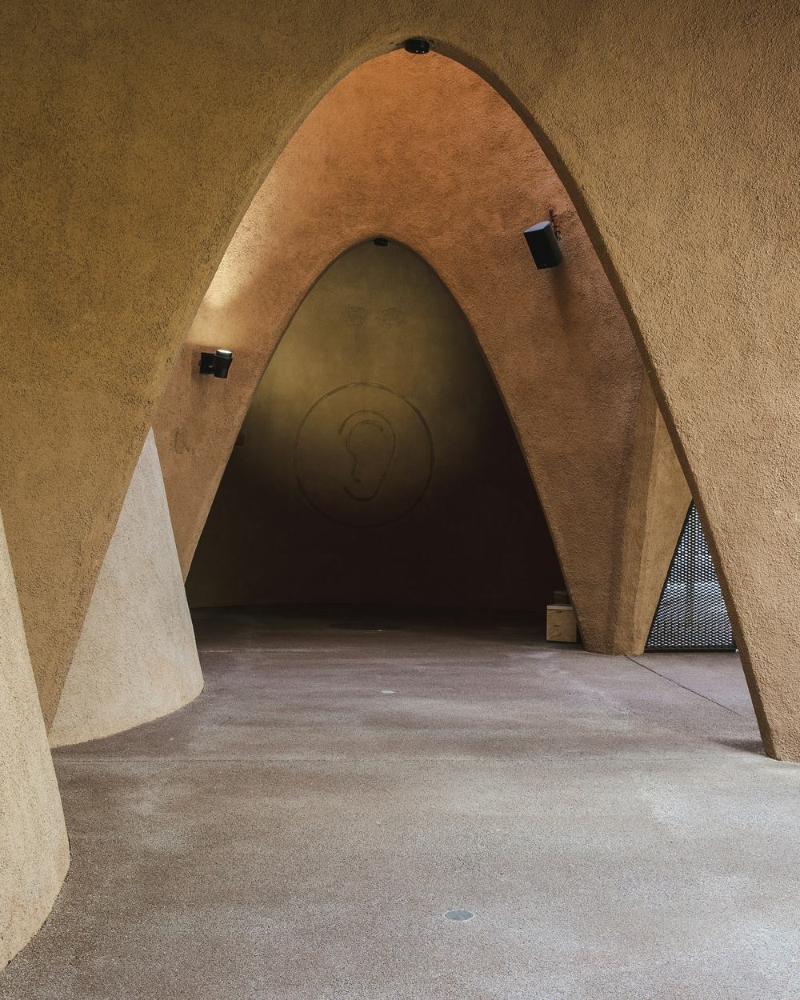
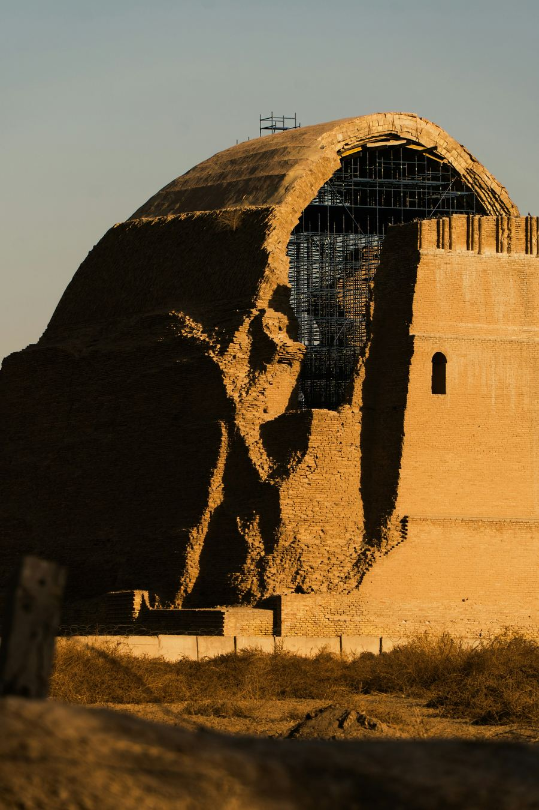

Foundation
Site strategy, structural intent, and development planning are set before individual components are designed.
Earth architecture and integrated systems
IRES joins rammed earth construction with architecture, energy, water, waste, landscape, and interiors. The result is one place that holds its temperature, its ground, and its people.
What IRES is
Rammed earth gives IRES its warmth, its mass, its texture, and its honesty. We add the precision of engineering, so every development is designed as one connected environment rather than a collection of separate parts.
Material tradition
Across the Sahel, the savannah, and the modern courtyard, earth has been built in layers from what the ground already gives. IRES works inside that tradition and brings current engineering to it.





Reference photography of earth architecture.

Material intelligence
IRES uses rammed earth for more than its appearance. Mass, texture, and local character support calm interiors, strong envelopes, and a direct relationship with the land the building stands on.
Earth returns to earth. What we build is designed to be repaired, not replaced.
Integrated delivery
The letters in our name are the order of work. Each one is settled before the next is detail designed.
Site strategy, structural intent, and development planning are set before individual components are designed.
Architecture, engineering, and material logic are shaped around climate, comfort, durability, and place.
Layered earth, energy, water, waste, landscape, and interiors work together as one practical system.
Finished environments are premium, self-sustaining, and maintainable for the long term.
How IRES works
Climate, soil, water, access, community, and ambition.
Architecture and the core infrastructure held in one brief.
Material, engineering, landscape, and finishes, coordinated.
A complete environment, with the maintenance it needs.
What we are for
IRES speaks with the confidence of a company that understands both earth and engineering. Every message is considered, and every detail is built to last.
Africa is the ground for a new standard of sustainable building.

Begin with the site
Tell IRES what you want to build, where it will live, and which systems need to be part of the solution from day one.